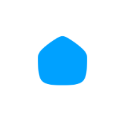

CRM/그로스 마케터 지원 | 이시스코스메틱
방향은 함께판단은 데이터로분석은 코딩으로
광고대행사에서 2년 1개월 동안 여섯 브랜드의 광고를 맡았습니다. 이제는 한 브랜드의 방향을 더 깊이 이해하고, 내부에서 함께 실행하고 싶습니다. CRM 경험은 아직 많지 않지만, 데이터로 판단하는 강점을 살리겠습니다. 사람이 일일이 살피기 어려운 데이터는 의사 결정에 필요한 항목부터 정하고, 코딩으로 분석 도구를 직접 만들어 활용하겠습니다.
6
담당 브랜드
80억 원
연간 최대 집행 광고비

이렇게 일합니다
회사의 방향을 먼저 이해하고, 데이터로 판단합니다. 사람이 일일이 살피기 어려운 데이터는 필요한 항목을 정하고, 직접 만든 도구로 분석합니다.
01
방향은 함께
회사가 가려는 방향과 지금의 숫자를 먼저 이해하고, 같은 방향으로 움직입니다. 입사 첫 2주는 데이터 현황과 측정 상태부터 확인합니다.
관련 케이스COSRX 북미
02
판단은 데이터로
숫자가 맞는지 확인하고, 고객을 구분한 뒤 비교 조건과 평가 지표를 정해 테스트를 설계합니다. GA4와 대시보드의 수치가 다르면 원인을 찾습니다.
03
분석은 코딩으로
업무 흐름을 정리하고 필요한 데이터를 모아 에이전트를 만듭니다. 분석할 때는 의사 결정에 필요한 데이터부터 정하고, 이를 분석하는 도구를 코드로 설계합니다. 리뷰 10만 건을 20분 만에 수집하는 에이전트도 만들었습니다.

구병기
공학도 출신 퍼포먼스 마케터 구병기입니다. 인테리어 소품 자사몰을 혼자 운영하며 커머스를 처음 배웠고, 공유오피스 지점 영업을 거쳐 광고대행사에서 일하고 있습니다.
광고 매체와 브랜드는 달라도 일하는 순서는 같았습니다. 숫자가 맞는지 확인하고, 고객을 구분하고, 비교 기준을 정해 테스트를 설계합니다.
연락하기경력
2024.09 — 현재2년 1개월
퍼포먼스 마케터(AE)
㈜이엠넷 광고사업2본부
광고대행사
2026.07 — 현재3개월
광고 운영 AI 도구 개발
sano, 개인 프로젝트
개인 프로젝트
2021.11 — 2023.031년 5개월
커뮤니티 매니저
㈜패스트파이브
공유오피스
2021.01 — 2022.081년 8개월
자사몰 단독 운영
구룸샵, 인테리어 소품
자사몰
학력
계명대학교 의용공학과 졸업(2021.02)
자격
검색광고마케터 1급, GTQ 그래픽기술자격 1급
성과와 발표
패스트파이브 분기 세일즈 영업왕, 사내 팀 AI 활용 사례 발표(2026.07)
담당 브랜드
생활용품부터 뷰티까지, 여섯 브랜드의 광고를 맡았습니다.

메인 담당
업무 기여도 80%

광고 운영 주담당
업무 기여도 80%

소재 기획, 일본어 검수
업무 기여도 30%

AX 업무 효율화 파견
대시보드 기획과 구축

카테고리별 예산 배분 설계
업무 기여도 50%

검색광고 구조 개선
업무 기여도 40%
주요 케이스
여섯 가지 일을 골랐습니다. 카드를 누르면 자세한 내용과 실제 화면을 볼 수 있습니다.
진행 중인 작업 6가지
- 01캠페인 요약
- 02업무 캘린더
- 03예산 소진 관리 자동화
- 04상시광고 성과 대시보드
- 05문안 작성 자동화
- 06미디어믹스 양식 통일
지금 진행 중
COSRX 북미 담당팀에서 반복 업무를 찾아 대시보드와 에이전트로 바꾸고 있습니다.
COSRX 북미(세포라, 얼타, 닷컴몰) | AX 업무 효율화 파견
2026년 10월부터 COSRX 북미 담당팀에 파견돼, 일하면서 발견한 반복 업무를 하나씩 대시보드와 에이전트로 바꾸고 있습니다. 현재 진행 중인 프로젝트 가운데 규모가 가장 큽니다.
자세히 보기→

사내 발표
반복 업무를 줄인 방법을 사내에 발표했습니다.
이엠넷 | 사내 AI 활용 사례 발표
반복 업무를 하나씩 골라 작업 순서와 필요한 데이터부터 정리했습니다. 그다음 Claude와 OpenAI Codex로 코드를 작성해 시제품을 만들었습니다. 실제 업무에 사용하면서 수정한 뒤 팀에 공유했습니다. 이렇게 만든 도구 3종과 제작 방법을 2026년 7월 사내 AI 활용 사례로 발표했습니다.
자세히 보기→


다루는 도구
광고 매체 운영부터 데이터 확인, 반복 업무 자동화까지 직접 다룹니다.
광고 매체
 네이버 검색광고
네이버 검색광고- 네이버 GFA
 메타 광고
메타 광고 구글 애즈
구글 애즈 카카오모먼트
카카오모먼트 카카오톡 채널
카카오톡 채널 크리테오
크리테오 틱톡
틱톡 토스
토스
오늘의집- 싱글원
- X
데이터
 GA4
GA4 GTM
GTM BigQuery
BigQuery Looker Studio
Looker Studio
제작과 자동화
 Photoshop
Photoshop Figma
Figma Claude
Claude OpenAI Codex
OpenAI Codex Next.js
Next.js Aside
Aside Ego Lite
Ego Lite Orca
Orca
이시스코스메틱에서 할 일
2026년 10월 19일 공개 페이지를 보고 세운 계획입니다. 내부 데이터를 보면 순서가 바뀔 수 있습니다.
입사 후 90일
0~14일
확인 자료 4종
데이터 현황표(주문, 회원, 판매점 데이터의 위치와 접근 권한), 수치 점검표(자사몰 주문 수와 분석 도구에 기록된 수치 비교), 월간 지표 초안(소비자와 판매점 지표를 한 장에 정리), 첫 실험 제안서(무엇을 누구에게 시험하고 어떤 결과를 비교할지)를 작성합니다.
30일까지
수치 점검
접근 권한과 개발 지원 범위를 확인한 뒤, GA4와 GTM을 통해 주요 고객 행동이 제대로 기록되는지 점검합니다. 활발하게 거래하는 판매점의 기준과 재주문 주기를 계산하는 기준도 정합니다.
31~60일
테스트 설계와 비교
가입 혜택 문구를 A/B 테스트하거나 기존 판매점에 첫 재주문을 안내하는 방법을 시험합니다. 구매 이력 데이터가 충분하고 안내에 동의한 고객이 확보되면, 리필 안내를 받은 고객과 받지 않은 고객의 결과를 비교합니다.
61~90일
운영에 반영
성과가 좋았던 메시지는 실제 운영에 적용하고 다음에 비교할 내용을 정합니다. 판매점의 첫 주문 과정에 대한 개선은 주문 데이터가 확인되면 일정을 앞당겨 진행합니다. 정품 인증 QR코드로 가입을 유도하는 방법은 판매점과 협의한 뒤 조건이 맞으면 제안하겠습니다.